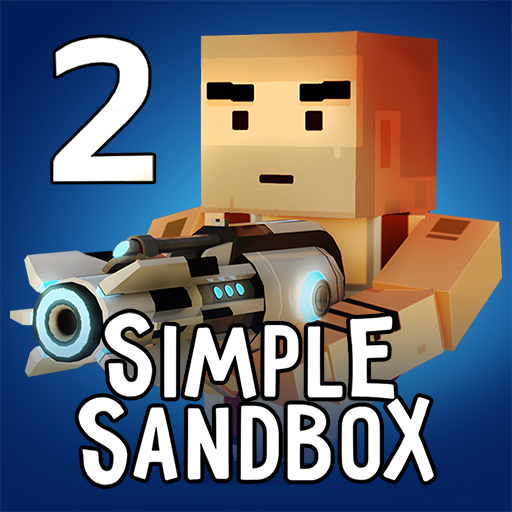

сімпл санбокс
Sandbox[1] — редактор уровней, который позволяет конструировать карты и модификации в трёхмерной среде CryEngine или CryEngine 2. Разработчик редактора — Crytek. Sandbox 1 (официальный релиз — 2004 г.) поставляется вместе с Far Cry и базируется на движке CryEngine, а Sandbox 2 (официальный релиз — 2007 г.) поставляется вместе с Crysis и базируется на движке CryEngine 2. Стиль редактирования акцентирован на создании больших ландшафтов и свободного стиля программирования миссий. Редактор также поддерживает создание закрытых (англ. indoor) уровней или локаций.
роблокс

Roblox (також відомий як DynaBlocks) — онлайн-платформа для створення ігор. Користувачі можуть створювати власні ігри в Roblox Studio (див. нижче), грати в ігри, створені іншими користувачами, а також створювати та вигадувати одяг для свого Roblox-персонажа. Деякі товари в каталозі Roblox можна купити за ігрову валюту — Robux[1